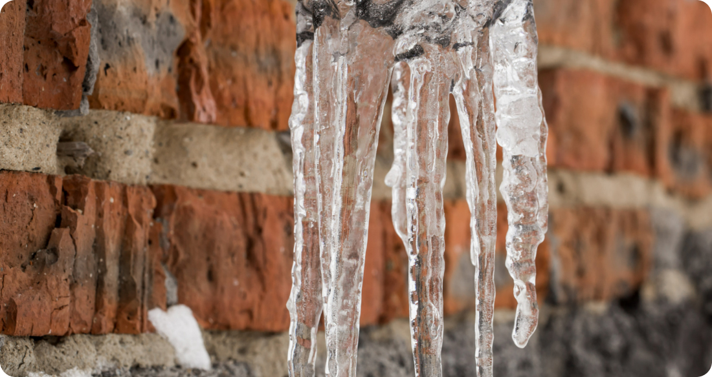
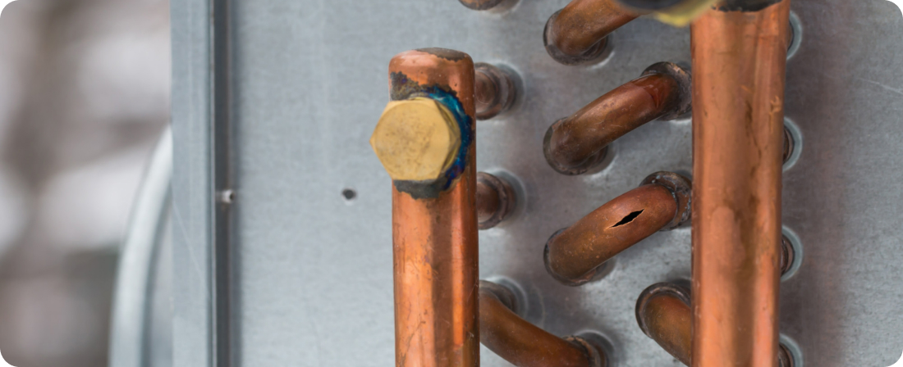

The Importance of Properly Insulating Your Pipes: Winterization Tips
As winter approaches, it's essential to prepare your home for the colder temperatures to prevent frozen pipes and costly water damage. One of the most crucial steps in winterizing your plumbing system is ensuring that your pipes are properly insulated. In this article, we'll explore the importance of pipe insulation and provide winterization tips to keep your pipes safe and your home protected.
1. Preventing Frozen Pipes
Frozen pipes can lead to a myriad of problems, including burst pipes, water damage, and costly repairs. When water freezes inside a pipe, it expands, putting pressure on the pipe walls and increasing the risk of cracks or ruptures. Properly insulated pipes are less susceptible to freezing, as the insulation helps retain heat and maintain a consistent temperature, even in cold weather conditions.
2. Preserving Water Flow:
In addition to preventing frozen pipes, insulation also helps preserve water flow by preventing blockages caused by ice buildup. When a pipe freezes, water flow is restricted or completely blocked, resulting in a loss of water pressure and potential backups throughout the plumbing system. By insulating your pipes, you can ensure continuous water flow and uninterrupted access to essential services, even during the coldest months of the year.
3. Protecting Against Energy Loss
Insulating your pipes not only protects against freezing but also helps conserve energy by reducing heat loss from hot water pipes. Uninsulated hot water pipes can lose heat as the water travels from the heater to the faucet, leading to higher energy bills and longer wait times for hot water. By insulating hot water pipes, you can minimize heat loss and improve the efficiency of your water heating system, ultimately saving money on utility costs.
4. Extending the Lifespan of Your Plumbing System
Properly insulated pipes are less prone to damage and corrosion, leading to a longer lifespan for your plumbing system as a whole. By protecting your pipes from the effects of freezing temperatures and thermal expansion, insulation helps prevent leaks, cracks, and other issues that can compromise the integrity of your plumbing system over time. This can ultimately save you money on repairs and replacements down the line.
Winterization Tips:
- Insulate both hot and cold water pipes located in unheated areas, such as basements, attics, crawl spaces, and exterior walls.
- Use foam pipe insulation sleeves or wrap pipes with heat tape to provide an additional layer of protection against freezing temperatures.
- Seal any gaps or cracks in walls, floors, or foundation openings to prevent cold air from reaching exposed pipes.
- Disconnect and drain outdoor hoses and turn off outdoor water spigots to prevent freezing and potential damage to pipes.
- Keep cabinet doors under sinks open to allow warm air to circulate around pipes located in these areas.
In conclusion, properly insulating your pipes is a crucial step in winterizing your home and protecting your plumbing system from the risks of freezing temperatures. By taking proactive measures to insulate your pipes and implement winterization tips, you can prevent frozen pipes, conserve energy, and extend the lifespan of your plumbing system, ensuring a safe and comfortable winter season for your home.